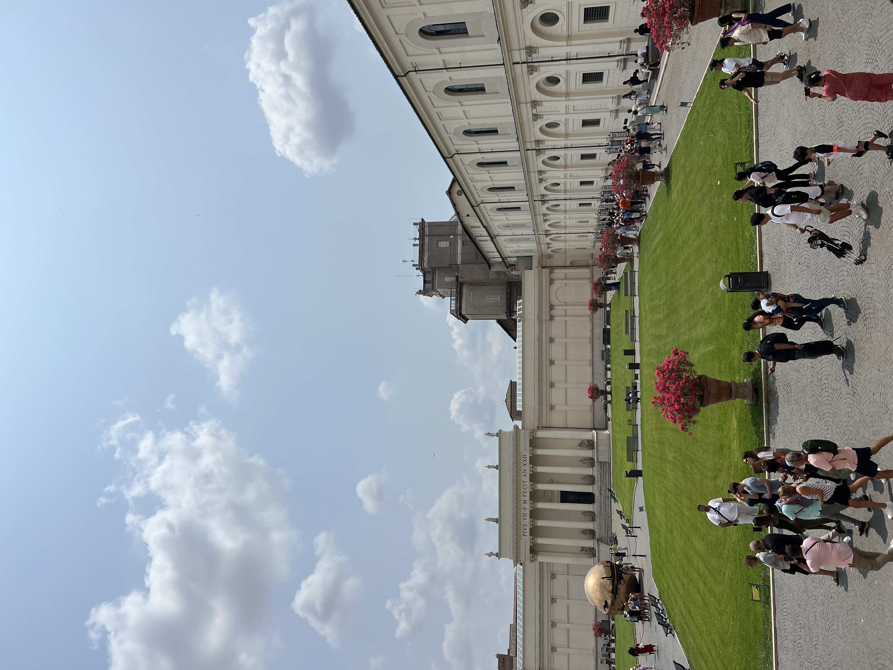
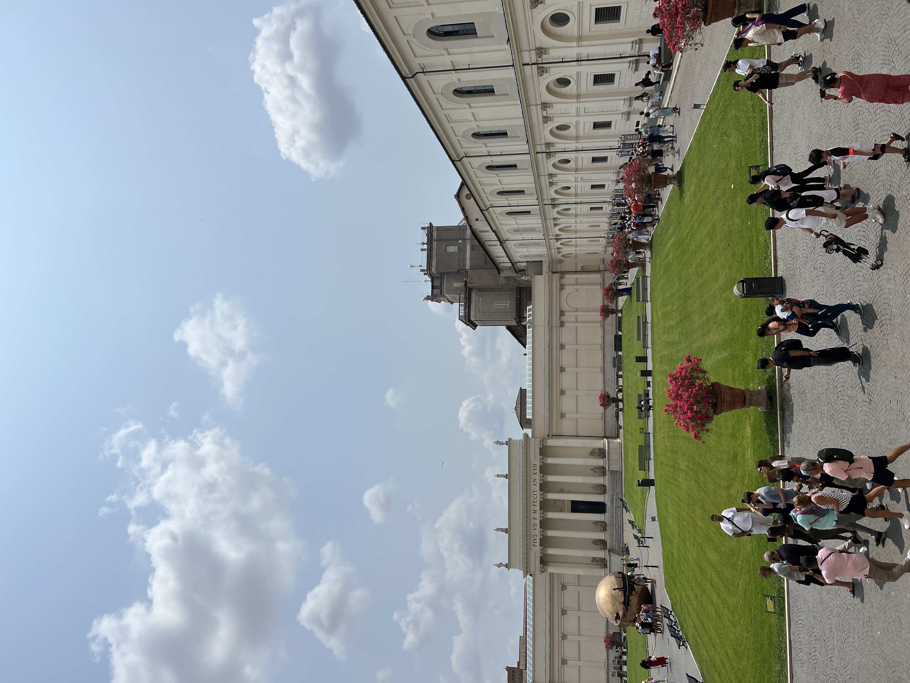

X
X
 

On March 17th, 1944 volcano Mount Vesuvius erupted destroying almost all of Pompeii. It buried the city under a layer of volcanic ash, practically freezing the city until its rediscovery. Pompeii is now used as an archaeological site where you can view the homes of those who passes in the Eruption along with many other artifacts found. The volcano is still active but has not erupted since 1944.
The Colosseum began construction in AD 70-72, and was completed in AD 80. At the time, it was used for entertainment such as plays of famous battles. Over time, the Colosseum has been damaged because of fires, and earthquakes. Something cool about the Colosseum is that it had underground tunnels that were built like a maze, that were concealed beneath the Colosseum.
The Amalfi Coast is one of the most beautiful coasts in the world. Surrounded by rocky beaches, and clear water this place can’t be missed! Amalfi is home to many towns such as Positano, Ravello, and Sorrento. Each town houses different activities to do. Sorrento is known for their lemon groves and the production of limoncello. Ravello is known for its historic building and beautiful gardens. In Ravello, you can enjoy many scenic walks with outstanding views. One of the highlights in Ravello is The Terrace of Infinity, which has one of the best views on the Coast.
The Vatican, built in 1929, is an independent city-state also known as Vatican City. It takes place within the city of Rome and is also the smallest independent state in the world. It serves as a spiritual part of the Roman Catholic Church. When entering certain parts of the Vatican you are not aloud to take pictures or talk. Your shoulders and knees also have to remain covered. Every Sunday, the Pope looks out his window over Saint Peter’s square and does a blessing for tourists.